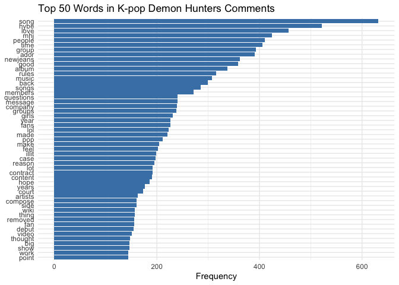
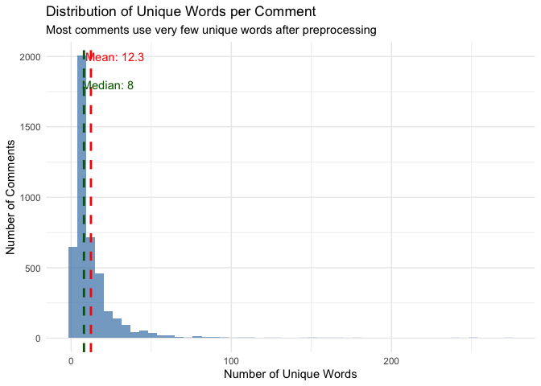
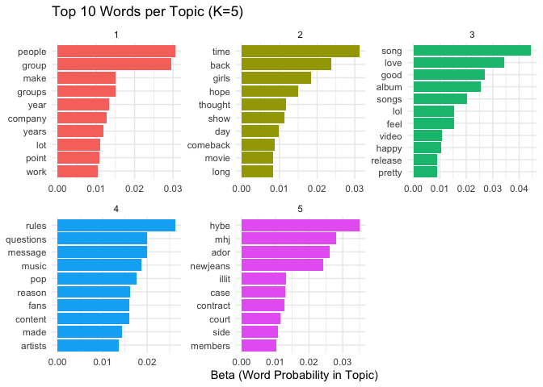
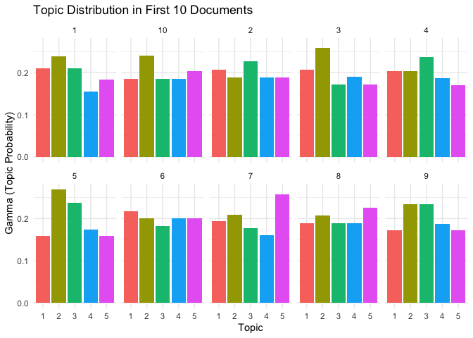
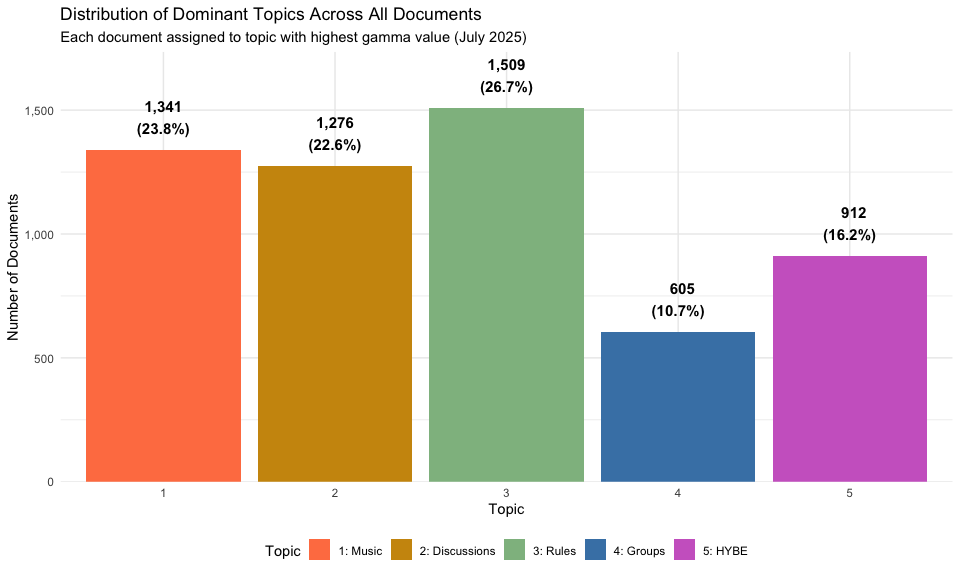
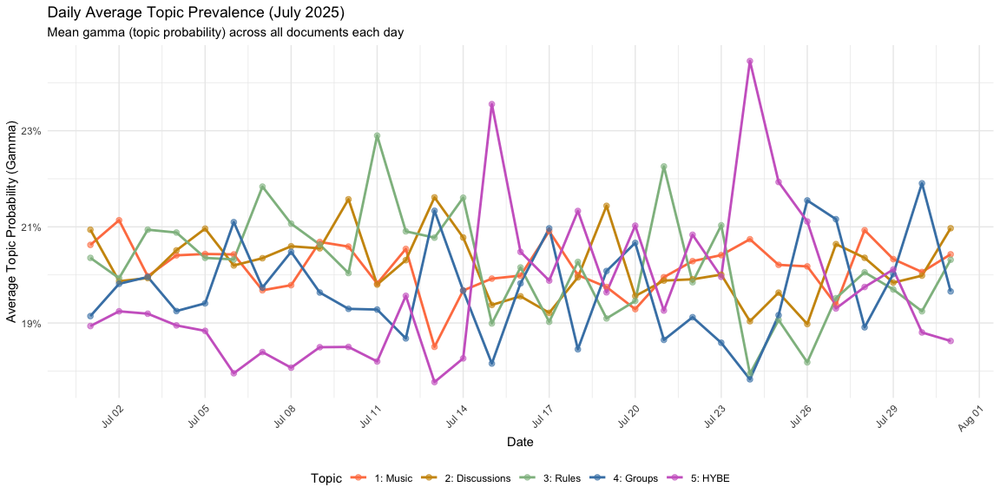
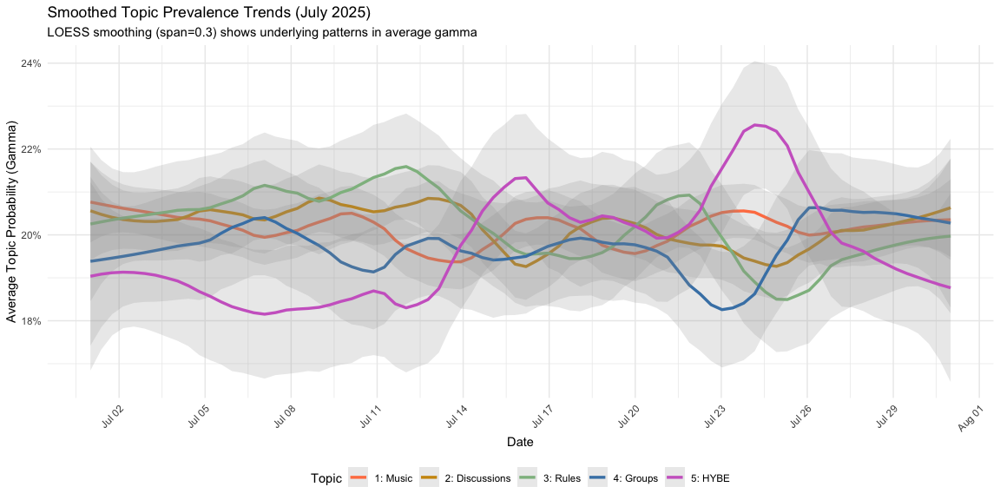
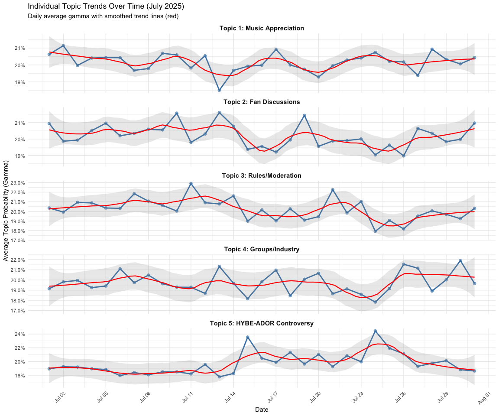
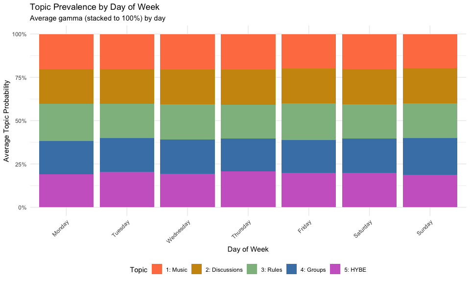
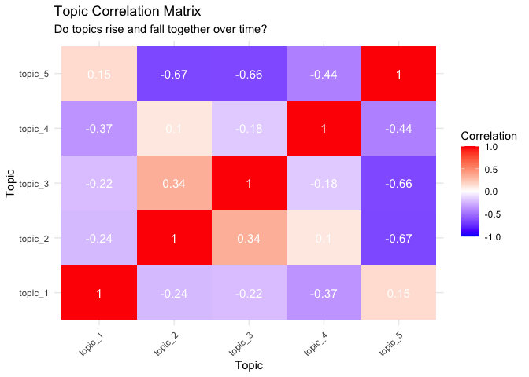

Text as Data: Topic Modeling
Dr. Ayse D. Lokmanoglu Lecture 9, (B) March 25, (A) March 30
R Exercises
Table of Contents
| Section | Topic |
|---|---|
| 1 | Intro to Topic Modeling |
| 1.1 | Why Use Topic Modeling? |
| 1.2 | Understanding LDA |
| 2 | Preprocessing Text Data |
| 2.1 | Load the Data |
| 2.2 | Initial Data Exploration |
| 2.3 | Text Preprocessing |
| 2.3.1 | Create Index, Backup Text, and Language Filtering |
| 2.3.2 | Create Custom Stopwords |
| 2.4 | Tokenization |
| 2.5 | Term Frequency Filtering with TF-IDF |
| 2.6 | Visualize Top Words |
| 2.7 | Create Document-Term Matrix |
| 3 | Choosing the Number of Topics (K) |
| 3.1 | What is Topic Coherence? |
| 3.2 | Types of Coherence Metrics |
| 3.3 | What Makes a “Good” Topic? |
| 3.4 | Computing Topic Coherence for Different K Values |
| 3.5 | Interpreting the Results for Optimal K |
| 3.6 | Choosing Optimal K |
| 4 | LDA Model |
| 4.1 | Train the LDA Model with the Optimal Topics |
| 4.2 | Save Your Work |
| 4.3 | Look Inside the LDA Model |
| 5 | The Beta & Gamma Matrices |
| 5.1 | Beta (β): Topic-Word Probabilities |
| 5.2 | Top Words per Topic - The Beta (β) Matrix using Tidy |
| 5.3 | Top 10 Words per Topic |
| 5.4 | Visualize Top Words |
| 5.5 | Top Documents per Topic - The Gamma (γ) Matrix using Tidy |
| 5.6 | Visualizing Document-Topic Distributions |
| 5.7 | Finding Representative Documents for Each Topic |
| 5.8 | Examining Representative Document Content |
| 5.9 | Summary of Representative Documents |
| 5.10 | Distribution of Dominant Topics |
| 5.11 | Topics Over Time |
ALWAYS Let’s load our libraries
library(tidyverse) # Data manipulation and visualization
library(tidytext) # Text mining using tidy data principles
library(ggplot2) # Data visualization (part of tidyverse)
library(stopwords) # Stopword lists in multiple languages
library(dplyr) # Data manipulation (part of tidyverse)
library(quanteda) # Quantitative text analysis
library(topicmodels) # Topic modeling (LDA, CTM)
library(topicdoc) # Topic coherence metrics
# Install devtools if needed by uncommenting this
# install.packages("devtools")
# Install ldaOptim
# devtools::install_github("aysedeniz09/ldaOptim")
library(ldaOptim)1. Intro to Topic Modeling
Topic modeling is an unsupervised machine learning technique that identifies latent themes in a collection of text documents. The most widely used approach is Latent Dirichlet Allocation (LDA), which assumes each document is a mixture of topics, and each topic is a mixture of words.
1.1 Why Use Topic Modeling?
- Helps uncover hidden structure in large text corpora
- Organizes vast amounts of text into interpretable themes
- Useful for content analysis, social media monitoring, and recommendation systems
- Allows exploration of what people are discussing without pre-defined categories

image from: https://www.tidytextmining.com/topicmodeling
1.2 Understanding LDA
Latent Dirichlet Allocation (LDA) is one of the most widely used algorithms for topic modeling. Without delving into the complex mathematics behind it, we can conceptualize LDA through two key principles:
- Every document is a mixture of topics.
- Each document contains words from multiple topics in different proportions.
- For instance, in a model with two topics, we could say:
- “Document 1 is 80% Topic A and 20% Topic B.”
- “Document 2 is 40% Topic A and 60% Topic B.”
- Every topic is a mixture of words.
- Each topic consists of words that commonly appear together.
- For example, in a two-topic model focused on K-pop:
- The “idol performance” topic might include words like dance, stage, music, and concert.
- The “fandom culture” topic might contain words like fans, streaming, voting, and billboard.
- Some words, like debut, may appear in both topics but with different frequencies.
LDA uses a probabilistic approach to simultaneously determine:
The composition of topics within each document
The key words that define each topic
This method enables us to uncover hidden themes in large text datasets without prior labeling.
2. Preprocessing Text Data
2.1 Load the Data
We’ll use Reddit comments about K-pop Demon Hunters. This dataset contains community discussions, reactions, and conversations about the show.
# Load the data
data_OG <- read_csv("https://media.githubusercontent.com/media/aysedeniz09/IntroCSS/refs/heads/main/data/kpop_comments_forclass.csv")
# Check structure
str(data_OG)## spc_tbl_ [23,270 × 18] (S3: spec_tbl_df/tbl_df/tbl/data.frame)
## $ text : chr [1:23270] "kind of a tangent but kind of a telling tidbit from japan...\n\n\nuniversal studio japan does these \"hybe x us"| __truncated__ "Thank you for submitting to r/kpop! Unfortunately, your post has been removed for the following reason(s):\n\n*"| __truncated__ "Thank you for submitting to r/kpop! Unfortunately, your post has been removed for the following reason(s):\n\n*"| __truncated__ "Put character skin out, I wanted to see NingNing tapped out Winter" ...
## $ id : chr [1:23270] "n0o7gct" "n0o7ocv" "n0o94v4" "n0o984c" ...
## $ author : chr [1:23270] "xxqbsxx" "kpop-ModTeam" "kpop-ModTeam" "Sunasoo" ...
## $ link_id : chr [1:23270] "t3_1kf7rre" "t3_1loneox" "t3_1lonl0c" "t3_1lom8cm" ...
## $ parent_id : chr [1:23270] "t3_1kf7rre" "t3_1loneox" "t3_1lonl0c" "t3_1lom8cm" ...
## $ created_utc : num [1:23270] 1.75e+09 1.75e+09 1.75e+09 1.75e+09 1.75e+09 ...
## $ score : num [1:23270] 71 1 1 9 1 10 5 1 2 30 ...
## $ downs : num [1:23270] 0 0 0 0 0 0 0 0 0 0 ...
## $ likes : logi [1:23270] NA NA NA NA NA NA ...
## $ controversiality: num [1:23270] 0 0 0 0 0 0 0 0 0 0 ...
## $ gilded : num [1:23270] 0 0 0 0 0 0 0 0 0 0 ...
## $ subreddit : chr [1:23270] "kpop" "kpop" "kpop" "kpop" ...
## $ permalink : chr [1:23270] "/r/kpop/comments/1kf7rre/megathread_22_hybe_ador_mhj_we_reach_one_year_of/n0o7gct/" "/r/kpop/comments/1loneox/bighit_musics_new_korean_boy_band_spotted_filming/n0o7ocv/" "/r/kpop/comments/1lonl0c/guys_i_need_help_finding_this_song/n0o94v4/" "/r/kpop/comments/1lom8cm/aespa_street_fighter_6_x_aespa_special_collab/n0o984c/" ...
## $ datetime : POSIXct[1:23270], format: "2025-07-01 00:02:08" "2025-07-01 00:03:25" ...
## $ date : Date[1:23270], format: "2025-07-01" "2025-07-01" ...
## $ year : num [1:23270] 2025 2025 2025 2025 2025 ...
## $ month : num [1:23270] 7 7 7 7 7 7 7 7 7 7 ...
## $ text_length : num [1:23270] 818 561 519 66 469 ...
## - attr(*, "spec")=
## .. cols(
## .. text = col_character(),
## .. id = col_character(),
## .. author = col_character(),
## .. link_id = col_character(),
## .. parent_id = col_character(),
## .. created_utc = col_double(),
## .. score = col_double(),
## .. downs = col_double(),
## .. likes = col_logical(),
## .. controversiality = col_double(),
## .. gilded = col_double(),
## .. subreddit = col_character(),
## .. permalink = col_character(),
## .. datetime = col_datetime(format = ""),
## .. date = col_date(format = ""),
## .. year = col_double(),
## .. month = col_double(),
## .. text_length = col_double()
## .. )
## - attr(*, "problems")=<externalptr>head(data_OG)## # A tibble: 6 × 18
## text id author link_id parent_id created_utc score downs likes
## <chr> <chr> <chr> <chr> <chr> <dbl> <dbl> <dbl> <lgl>
## 1 "kind of a tange… n0o7… xxqbs… t3_1kf… t3_1kf7r… 1751328128 71 0 NA
## 2 "Thank you for s… n0o7… kpop-… t3_1lo… t3_1lone… 1751328205 1 0 NA
## 3 "Thank you for s… n0o9… kpop-… t3_1lo… t3_1lonl… 1751328709 1 0 NA
## 4 "Put character s… n0o9… Sunas… t3_1lo… t3_1lom8… 1751328740 9 0 NA
## 5 "Thank you for s… n0o9… kpop-… t3_1lo… t3_1lonk… 1751328826 1 0 NA
## 6 "Where’s the Aku… n0oa… Optio… t3_1lo… t3_1lom8… 1751329139 10 0 NA
## # ℹ 9 more variables: controversiality <dbl>, gilded <dbl>, subreddit <chr>,
## # permalink <chr>, datetime <dttm>, date <date>, year <dbl>, month <dbl>,
## # text_length <dbl>2.2 Initial Data Exploration
Let’s understand what we’re working with:
# How many comments?
nrow(data_OG)## [1] 23270# Date range
range(data_OG$date)## [1] "2025-07-01" "2025-07-31"# Score distribution
summary(data_OG$score)## Min. 1st Qu. Median Mean 3rd Qu. Max.
## -85.00 2.00 7.00 19.98 21.00 1779.00# Text length distribution
summary(data_OG$text_length)## Min. 1st Qu. Median Mean 3rd Qu. Max.
## 51.0 89.0 152.0 274.3 308.0 9673.0# Look at a few comments
head(data_OG$text, 5)## [1] "kind of a tangent but kind of a telling tidbit from japan...\n\n\nuniversal studio japan does these \"hybe x usj summer dance night\" thing in july and aug where they play hybe artists music for ppl to dance to \n\n\nits an official event and i think &team actually came to perform live last year\n\n\nyou can search on socials for the setlist, but this year theyve completely cut nj from the lineup (eta and supershy were on there last year)\n\n\ntokkis may use this to cry mistreatment and erasure, but how could they promote a group that refuses to acknowledge their company🤷\n\n\nand tbh the setlist with illit and tws added this year does not look lacking at all, such is the fast paced world of kpop \n\n\ni hope the members and their fans realize that the world wont be waiting for them but just move on and find the next big thing"
## [2] "Thank you for submitting to r/kpop! Unfortunately, your post has been removed for the following reason(s):\n\n* Submissions that are not substantially newsworthy should be posted to the [artist's subreddit](https://www.reddit.com/r/kpop/wiki/relatedsubs#wiki_group.2Fartist_subreddits.3A). Please check each subreddit's rules before posting.\n\nIf you have any questions regarding the ruleset of r/kpop, please refer to the [Rules](https://www.reddit.com/r/kpop/wiki/rules) or [message the moderators](https://www.reddit.com/message/compose/?to=/r/kpop). Thank you!"
## [3] "Thank you for submitting to r/kpop! Unfortunately, your post has been removed for the following reason(s):\n\n* Please go to r/kpophelp and use the **Monthly 'Who's this?' & Merch Authentication Post** to get help for your question. You should be able to find it pinned to the top of that subreddit.\n\nIf you have any questions regarding the ruleset of r/kpop, please refer to the [Rules](https://www.reddit.com/r/kpop/wiki/rules) or [message the moderators](https://www.reddit.com/message/compose/?to=/r/kpop). Thank you!"
## [4] "Put character skin out, I wanted to see NingNing tapped out Winter"
## [5] "Thank you for submitting to r/kpop! Unfortunately, your post has been removed for the following reason(s):\n\n* Your submission is off-topic for this subreddit. All submissions must be directly relevant to Korean music, artists, companies, or fans.\n\nIf you have any questions regarding the ruleset of r/kpop, please refer to the [Rules](https://www.reddit.com/r/kpop/wiki/rules) or [message the moderators](https://www.reddit.com/message/compose/?to=/r/kpop). Thank you!"For the purpose of this class we will sample our data, using tidy sample_frac().
data <- data_OG |>
sample_frac(0.2)
# How many comments?
nrow(data)## [1] 4654# Date range
range(data$date)## [1] "2025-07-01" "2025-07-31"# Score distribution
summary(data$score)## Min. 1st Qu. Median Mean 3rd Qu. Max.
## -85.00 2.00 8.00 20.15 22.00 1135.00# Text length distribution
summary(data$text_length)## Min. 1st Qu. Median Mean 3rd Qu. Max.
## 51.0 91.0 154.0 280.5 317.0 7246.0# Look at a few comments
head(data$text, 5)## [1] "This was my third time going to rogers stadium (straykids and coldplay) and getting there and going home was the most streamline and organized by far. It's an easy walk from downsview station. My friends and I got to the stadium at 545 pm and there was barely any lineup at the American express entrance. The regular entrance during coldplay was also really quick.\n\nThere will be crowds but I think the workers have really learned from the previous weeks and are pretty well organized! I recommend you go for tonight's show, the girls were amazing 😁"
## [2] "THE BEAT! I really like the song but I wish it was longer."
## [3] "He’s been doing some interviews and I saw he was on a KBS show 2 weeks ago and did some covers for a live audience, one of them was A Thousand Years"
## [4] "Yeah just coming in here to say so happy that WOODZ and Drowning is still charting! That album is insanely good."
## [5] "Awards for performances are done by Inkigayo's weekly Hot Stage awards, Inkigayo's music show wins are awards for the songs themselves, not the stage/performance."2.3 Text Preprocessing
Before we can run topic models, we need to clean and prepare our text data.
2.3.1 Create Index, Backup Text, and Language Filtering
Important: We’ll create new objects at each step so we don’t lose our original data.
Why these steps matter:
- Language filtering: Reddit has international users, so we remove non-English comments
- Duplicate removal: Same comment posted multiple times (e.g., copypasta, bots)
- Creating new objects: We keep
data,data2,data3so we can backtrack if needed
data <- data |>
mutate(
comment_index = row_number(), ## create a document index
textBU = text, ## backup the text column
CLD2 = cld2::detect_language(text) ## check the language
)
# Check language distribution
data |> count(CLD2, sort = TRUE)## # A tibble: 6 × 2
## CLD2 n
## <chr> <int>
## 1 en 4627
## 2 <NA> 17
## 3 ko 7
## 4 es 1
## 5 fr 1
## 6 id 1# Filter to English only
data2 <- data |> filter(CLD2 == "en")
# Remove duplicate texts
data3 <- data2 |> distinct(text, .keep_all = TRUE)2.3.2 Create Custom Stopwords
We’ll remove common words that don’t add meaning to our topics. For K-pop discussions, we might want to remove very generic terms.
# Create custom stopword list
mystopwords <- c(
stopwords("en"),
stopwords::stopwords(source = "smart"),
# Add domain-specific stopwords
"https", "http", "t.co", "amp", # URLs and HTML
"reddit", "comment", "post", "thread", # Reddit-specific
"edit", "edited", "update", # Reddit conventions
"kpop" # Remove your own search words as they will be in every document
)
mystopwords <- unique(mystopwords)
mystopwords <- tolower(mystopwords)
# Check how many stopwords we have
length(mystopwords)## [1] 5922.4 Tokenization
Now we’ll break our text into individual words (tokens) and remove stopwords. We will sample!!!
# Tokenize the text
tidy_data <- data3 |>
unnest_tokens(word, text) |> # Break into words
anti_join(data.frame(word = mystopwords)) |> # Remove stopwords
mutate(nchar = nchar(word)) |> # Count characters per word
filter(nchar > 2) |> # Keep words with more than 2 characters
filter(!grepl("[0-9]{1}", word)) |> # Remove words with numbers
filter(!grepl("\\W", word)) # Remove words with special characters
# Check results
head(tidy_data)## # A tibble: 6 × 22
## id author link_id parent_id created_utc score downs likes controversiality
## <chr> <chr> <chr> <chr> <dbl> <dbl> <dbl> <lgl> <dbl>
## 1 n4pdh… mauip… t3_1m6… t1_n4nnp… 1753275185 7 0 NA 0
## 2 n4pdh… mauip… t3_1m6… t1_n4nnp… 1753275185 7 0 NA 0
## 3 n4pdh… mauip… t3_1m6… t1_n4nnp… 1753275185 7 0 NA 0
## 4 n4pdh… mauip… t3_1m6… t1_n4nnp… 1753275185 7 0 NA 0
## 5 n4pdh… mauip… t3_1m6… t1_n4nnp… 1753275185 7 0 NA 0
## 6 n4pdh… mauip… t3_1m6… t1_n4nnp… 1753275185 7 0 NA 0
## # ℹ 13 more variables: gilded <dbl>, subreddit <chr>, permalink <chr>,
## # datetime <dttm>, date <date>, year <dbl>, month <dbl>, text_length <dbl>,
## # comment_index <int>, textBU <chr>, CLD2 <chr>, word <chr>, nchar <int>nrow(tidy_data) # How many tokens do we have?## [1] 794052.5 Term Frequency Filtering with TF-IDF
Not all words are equally useful for topic modeling. We want to remove:
Very common words that appear in almost every document (too general)
Very rare words that appear in only 1-2 documents (too specific)
We use TF-IDF principles to filter our vocabulary:
# Set thresholds
maxndoc <- 0.75 # Remove words in more than 75% of documents
minndoc <- 0.001 # Remove words in less than 0.1% of documents
# Calculate document frequency for each word
templength <- length(unique(tidy_data$comment_index))
good_common_words <- tidy_data |>
count(comment_index, word, sort = TRUE) |>
group_by(word) |>
summarize(doc_freq = n() / templength) |>
filter(doc_freq < maxndoc) |> # Not too common
filter(doc_freq > minndoc) # Not too rare
# How many words passed our filter?
nrow(good_common_words)## [1] 2845# Clean our tidy data to only include these words
tidy_data_pruned <- tidy_data |>
inner_join(good_common_words)
# NOTE: This is where you might lose some documents that had no remaining words2.6 Visualize Top Words
Before modeling, let’s see what words are most common in our corpus:
# Plot top 50 words
tidy_data_pruned |>
group_by(word) |>
summarise(n = n()) |>
arrange(desc(n)) |>
mutate(word = reorder(word, n)) |>
top_n(50) |>
ggplot(aes(n, word)) +
geom_col(fill = "steelblue") +
labs(
title = "Top 50 Words in K-pop Demon Hunters Comments",
y = NULL,
x = "Frequency"
) +
theme_minimal()
Questions to ask: - Do these words make sense for K-pop discussions?
Are there any words we should add to our stopword list?
Do we see evidence of different themes already?
2.7 Create Document-Term Matrix
For topic modeling, we need to convert our tidy data into a Document-Term Matrix (DTM):
Rows = documents (comments)
Columns = words (terms)
Values = word counts
# Create DTM using tidytext
tidy_dfm <- tidy_data_pruned |>
count(comment_index, word) |>
cast_dtm(comment_index, word, n)
# Check dimensions
tidy_dfm## <<DocumentTermMatrix (documents: 4473, terms: 2845)>>
## Non-/sparse entries: 55219/12670466
## Sparsity : 100%
## Maximal term length: 15
## Weighting : term frequency (tf)dim(tidy_dfm)## [1] 4473 2845Understanding the Document-Term Matrix Output
When you print the DTM, you’ll see output like this:
Line 1: Dimensions
documents: 4473= We have 4473 comments in our datasetterms: 2845= We have 2845 unique words in our vocabularyThis creates a matrix with 4473 rows × 2845 columns = 12,725,685 total cells
Line 2: Entries
Non-sparse entries: 55,219= Only 55,219 cells contain actual word countsSparse entries: 12,670,466= Most cells are empty (zeros)
Line 3: Sparsity
Sparsity: 100%= Essentially 100% of the matrix is empty (zeros)
Line 4: Term Length
Maximal term length: 15= The longest word has 15 characters
Why does this matter?
Text data is naturally sparse because:
dtm_matrix <- as.matrix(tidy_dfm)
words_per_doc <- rowSums(dtm_matrix > 0)
mean(words_per_doc) # Average unique words per comment## [1] 12.34496median(words_per_doc) # Median unique words per comment## [1] 8quantile(words_per_doc, c(0.25, 0.75)) # 25th and 75th percentiles## 25% 75%
## 5 14mean(words_per_doc) / ncol(tidy_dfm) * 100 # Average % of vocabulary used## [1] 0.4339177median(words_per_doc) / ncol(tidy_dfm) * 100 # Median % of vocabulary used## [1] 0.2811951rm(dtm_matrix)Our data shows:
Average comment uses only 12.3 unique words (median: 8 words) - Vocabulary has 2845 words total
Each comment uses only 0.43% of the available vocabulary (median: 0.28%)
Range: Comments use between 1 to 273 unique words
Most comments (50%) use between 5-14 unique words (interquartile range)
This extreme sparsity is why topic modeling is powerful - it finds patterns in this sparse, high-dimensional data by identifying which words tend to co-occur across documents, revealing hidden thematic structure!
Visualization:
# Visualize distribution of words per comment
data.frame(words = words_per_doc) |>
ggplot(aes(x = words)) +
geom_histogram(bins = 50, fill = "steelblue", alpha = 0.7) +
geom_vline(xintercept = mean(words_per_doc),
color = "red", linetype = "dashed", size = 1) +
geom_vline(xintercept = median(words_per_doc),
color = "darkgreen", linetype = "dashed", size = 1) +
annotate("text", x = mean(words_per_doc) + 15, y = 2000,
label = paste("Mean:", round(mean(words_per_doc), 1)),
color = "red") +
annotate("text", x = median(words_per_doc) + 15, y = 1800,
label = paste("Median:", median(words_per_doc)),
color = "darkgreen") +
labs(
title = "Distribution of Unique Words per Comment",
subtitle = "Most comments use very few unique words after preprocessing",
x = "Number of Unique Words",
y = "Number of Comments"
) +
theme_minimal()
Important: Notice if we lost any documents during preprocessing. This happens when comments had no words left after stopword removal and filtering.
# How many documents did we start with?
nrow(data3)## [1] 4485# How many documents in our DTM?
nrow(tidy_dfm)## [1] 4473# How many did we lose?
nrow(data3) - nrow(tidy_dfm)## [1] 12Summary of data filtering:
| Step | # Comments | Comments Lost | Reason |
|---|---|---|---|
| Original data | 23,270 | - | Raw r/kpop comments |
| Sample | 4,654 | 18,616 | Random sample taken |
| Language filter | 4,627 | 27 | Removed non-English comments |
| Duplicate removal | 4,485 | 142 | Removed duplicate/repeated comments |
| Preprocessing filter | 4,473 | 12 | Removed comments with no words after stopword removal and TF-IDF filtering |
| Final dataset | 4,473 | 18,797 total | Ready for topic modeling |
3. Choosing the Number of Topics (K)
One of the most important decisions in topic modeling is choosing how many topics (K) to extract. There’s no perfect answer, but we can use topic coherence metrics to guide our decision.
3.1 What is Topic Coherence?
Topic coherence measures how interpretable and meaningful a topic is by calculating how often the top words in a topic appear together in documents.
High coherence = words in a topic frequently co-occur (topic makes sense) Low coherence = words in a topic rarely appear together (topic is random/unclear)
Think of it like this:
A topic with words {dance, performance, stage, choreography} has HIGH coherence (these words naturally go together)
A topic with words {dance, breakfast, politics, ocean} has LOW coherence (these words don’t relate)
3.2 Types of Coherence Metrics
There are several ways to measure topic coherence:
| Metric | Description | What It Measures |
|---|---|---|
| C_V | Based on sliding window word co-occurrence | Most commonly used; balances accuracy and interpretability |
| C_UMass | Based on document co-occurrence | How often topic words appear in same documents |
| C_UCI | Based on pointwise mutual information | Statistical association between words |
| C_NPMI | Normalized pointwise mutual information | Normalized version of UCI |
For this class, we’ll focus on C_V (most popular) and C_UMass (fastest to compute).
3.3 What Makes a “Good” Topic?
A good topic should have:
- High coherence - Words make sense together
- High exclusivity - Words are specific to this topic (not shared across all topics)
- Interpretability - Humans can understand what the topic is about
- Coverage - Topics cover the main themes in your corpus
Trade-off Alert: Sometimes increasing K gives you more specific topics (higher exclusivity) but lower coherence. We need to find the sweet spot!
3.4 Find Topic Numbers
# Create models with different number of topics
# Note: This takes several minutes to run!
start_time <- Sys.time()
cat("Starting at:", format(start_time, "%H:%M:%S"), "\n")## Starting at: 20:30:15result <- lda_find_topics(
dtm = tidy_dfm,
topics = seq(5, 100, by = 20),
metrics = c("Griffiths2004", "CaoJuan2009", "Arun2010", "Deveaud2014"),
control = list(alpha = 5/50), # Use optimal alpha
)## | | | 0% | |============== | 20% | |============================ | 40% | |========================================== | 60% | |======================================================== | 80% | |======================================================================| 100%# Visualize all four metrics
end_time <- Sys.time()
cat("Finished at:", format(end_time, "%H:%M:%S"), "\n")## Finished at: 20:31:10cat("Total time:", round(difftime(end_time, start_time, units = "mins"), 2), "minutes\n")## Total time: 0.92 minutesplot_topics_metrics(result)3.5 Interpreting the Results for Optimal K
This plot shows four different metrics for evaluating topic models:
Top Panel (minimize — lower is better)
CaoJuan2009: Steadily decreases from K=5 to K=85, suggesting more topics improve distinctiveness — though gains flatten after K=45
Arun2010: Follows almost the same trajectory as CaoJuan2009, both approaching zero by K=85
Bottom Panel (maximize — higher is better)
Griffiths2004: Starts near 0 at K=5, rises steeply to ~0.8 by K=25, then plateaus around 1.0 from K=45 onwards — suggesting diminishing returns after K=45
Deveaud2014: Starts at 1.0 at K=5 and decreases almost linearly to near 0 at K=85 — not very informative as it offers no clear optimal point
What do we notice?
The metrics tell different stories:
CaoJuan2009 and Arun2010 keep improving with more topics (no clear elbow)
Griffiths2004 plateaus around K=45, suggesting that’s where additional topics stop adding meaningful information
Deveaud2014 is essentially linear — not useful for selecting K here
Griffiths2004 gives the clearest signal:
The steep rise from K=5 to K=25 suggests those early topics are capturing real structure
The plateau from K=45 onwards suggests K=25–45 is a reasonable range to explore
Which metric should we trust?
CaoJuan2009: Measures topic distinctiveness (how different topics are from each other)
Arun2010: Measures how well the topic distribution fits the data’s structure
Griffiths2004: Measures overall model fit — the plateau is a useful signal for selecting K
Deveaud2014: Measures topic divergence, but its linear decline here makes it less useful for this dataset
3.6 Choosing Optimal K
Based on our coherence analysis, the metrics point to K = 25 as the optimal number of topics — this is where Griffiths2004 shows its steepest gains before beginning to plateau, and where CaoJuan2009 and Arun2010 show meaningful improvement over smaller K values.
However, for this class exercise we will use K = 5. Here’s why:
Why K=25 would be ideal?
Griffiths2004 plateaus around K=25–45 — additional topics beyond this range add little new information
CaoJuan2009 and Arun2010 both improve substantially up to K=25 before gains slow down
25 topics offers a good balance between capturing discourse complexity and maintaining topic distinctiveness
Why we’re using K=5 instead:
Interpretability — 5 broad themes are much easier to understand, explain, and discuss in class
Demonstration purposes — fewer topics makes it easier to see how LDA works and to manually validate topic labels
Computational speed — faster to fit and re-run during the exercise
What about K=45, K=65, or K=85?
The metrics continue to improve or plateau at these values, but the topics become increasingly fragmented and harder to interpret meaningfully
More topics ≠ better topics for our purposes
Let’s now fit our LDA model with K=5 topics!
4. LDA Model
LDA converts the document-word matrix (we had above as tidy_dfm) into two other matrices:
Topic-Word matrix (Beta (β)) - The probability of each word belonging to each topic
Document-Topic matrix (Gamma (γ)) - The probability of each document belonging to each topic

image from: https://cdn.analyticsvidhya.com/wp-content/uploads/2021/06/26864dtm.webp
How LDA works:
Input: Document-Term Matrix (DTM)
Rows = documents (Reddit comments)
Columns = words (vocabulary)
Values = word counts
LDA Processing: Discovers latent topics by finding patterns in word co-occurrence
Output: Two probability matrices
Beta (β): For each topic, what words are most probable?
Gamma (γ): For each document, what topics are most probable?
4.1 Train the LDA Model with the Optimal Topics
LDA objects take a lot of memory so we should always clean up the memory from no longer used objects.
# Clean up workspace - keep only essential objects
# This frees up memory and keeps the environment organized
# List of objects to KEEP
keep_objects <- c(
"data", # Original sampled dataset
"data2", # cleaned dataset
"data3", # last dataset
"mystopwords", # Custom stopwords list
"tidy_dfm" # LDA object we will delete after
)
# Remove everything except the objects we want to keep
rm(list = setdiff(ls(), keep_objects))
# Run garbage collection to free up memory
gc()## used (Mb) gc trigger (Mb) limit (Mb) max used (Mb)
## Ncells 3493669 186.6 6305862 336.8 NA 6305862 336.8
## Vcells 6797313 51.9 46815533 357.2 36864 73148991 558.1# Check what we have left
print("Remaining objects in workspace:")## [1] "Remaining objects in workspace:"print(ls())## [1] "data" "data2" "data3" "mystopwords" "tidy_dfm"Now let’s train our LDA model with K=5 topics.
# Set seed for reproducibility
set.seed(42)
# Train LDA model with K=5 topics
# Note: This may take a few minutes!
start_time <- Sys.time()
print(paste("Training LDA model with K=5..."))## [1] "Training LDA model with K=5..."print(paste("Start time:", format(start_time, "%H:%M:%S")))## [1] "Start time: 20:31:11"lda_model_k5 <- LDA(
tidy_dfm,
k = 5,
method = "Gibbs",
control = list(
verbose = 500, # Print progress every 500 iterations
seed = 42, # For reproducibility
iter = 2000, # Number of iterations
burnin = 500 # Burn-in period
)
)## K = 5; V = 2845; M = 4473
## Sampling 2500 iterations!
## Iteration 500 ...
## Iteration 1000 ...
## Iteration 1500 ...
## Iteration 2000 ...
## Iteration 2500 ...
## Gibbs sampling completed!end_time <- Sys.time()
print(paste("Finished at:", format(end_time, "%H:%M:%S")))## [1] "Finished at: 20:31:15"print(paste("Total time:", round(difftime(end_time, start_time, units = "mins"), 2), "minutes"))## [1] "Total time: 0.07 minutes"What do these parameters mean?
k = 5: Number of topics (based on our coherence analysis)method = "Gibbs": Gibbs sampling algorithm (standard for LDA)iter = 2000: Run 2000 iterations of the algorithmburnin = 500: Discard first 500 iterations (model is still “warming up”)thin = 10: Keep every 10th iteration after burnin (reduces autocorrelation)seed = 42: Ensures reproducibility
4.2 Save Your Work
Before continuing, it’s a good idea to save your workspace. LDA models take time to train, so you don’t want to lose your work!
# Save the entire workspace
save.image("../data/Lecture9_LDA_k5.RData")
# Alternatively, save just the LDA model
# save(lda_model_k5, file = "../data/lda_model_k5.RData")
# To load it later:
# load("../data/Lecture9_LDA_k5.RData")Why save your work?
LDA training can take 5-15 minutes (or longer for large datasets)
If R crashes or you close your session, you’d have to retrain
save.image()saves everything in your workspacesave()saves specific objects (more efficient if you only need the model)
4.3 Look Inside the LDA Model
# Examine the model structure
str(lda_model_k5)## Formal class 'LDA_Gibbs' [package "topicmodels"] with 16 slots
## ..@ seedwords : NULL
## ..@ z : int [1:64222] 3 1 3 2 1 2 5 2 4 3 ...
## ..@ alpha : num 10
## ..@ call : language LDA(x = tidy_dfm, k = 5, method = "Gibbs", control = list(verbose = 500, seed = 42, iter = 2000, burnin = 500))
## ..@ Dim : int [1:2] 4473 2845
## ..@ control :Formal class 'LDA_Gibbscontrol' [package "topicmodels"] with 14 slots
## .. .. ..@ delta : num 0.1
## .. .. ..@ iter : int 2500
## .. .. ..@ thin : int 2000
## .. .. ..@ burnin : int 500
## .. .. ..@ initialize : chr "random"
## .. .. ..@ alpha : num 10
## .. .. ..@ seed : int 42
## .. .. ..@ verbose : int 500
## .. .. ..@ prefix : chr "/var/folders/1n/8wbl6_f51tz27s0119qcsfyh0000gq/T//RtmpzyIkDs/filea0d8ac9264c"
## .. .. ..@ save : int 0
## .. .. ..@ nstart : int 1
## .. .. ..@ best : logi TRUE
## .. .. ..@ keep : int 0
## .. .. ..@ estimate.beta: logi TRUE
## ..@ k : int 5
## ..@ terms : chr [1:2845] "amazing" "american" "barely" "easy" ...
## ..@ documents : chr [1:4473] "1" "2" "3" "4" ...
## ..@ beta : num [1:5, 1:2845] -8.08 -11.73 -5.21 -11.69 -11.91 ...
## ..@ gamma : num [1:4473, 1:5] 0.211 0.208 0.207 0.203 0.159 ...
## ..@ wordassignments:List of 5
## .. ..$ i : int [1:55219] 1 1 1 1 1 1 1 1 1 1 ...
## .. ..$ j : int [1:55219] 1 2 3 4 5 6 7 8 9 10 ...
## .. ..$ v : num [1:55219] 3 1 3 2 1 2 5 2 4 3 ...
## .. ..$ nrow: int 4473
## .. ..$ ncol: int 2845
## .. ..- attr(*, "class")= chr "simple_triplet_matrix"
## ..@ loglikelihood : num -398413
## ..@ iter : int 2500
## ..@ logLiks : num(0)
## ..@ n : int 64222Key components we see:
Formal class 'LDA_Gibbs' [package "topicmodels"] with 16 slots
..@ k : int 5 # Number of topics
..@ terms : chr [1:2845] # Vocabulary
..@ documents : chr [1:4473] # Document IDs
..@ beta : num [1:5, 1:2845] # Topic-word probabilities
..@ gamma : num [1:4473, 1:5] # Document-topic probabilities
..@ alpha : num 10 # Prior for document-topic distribution
..@ iter : int 2500 # Total iterations run
..@ loglikelihood : num -3.98413\times 10^{5} # Model fitWhat these components mean:
@k: We trained 5 topics (as planned)@terms: All 2,845 unique words in our vocabulary@documents: All 4,473 index we created@beta: The Topic-Word matrix (which words belong to which topics?)@gamma: The Document-Topic matrix (which topics appear in which documents?)@alpha: Hyperparameter controlling topic distribution (10 = fairly diffuse)@loglikelihood: How well the model fits the data (-3.98413^{5} — more negative = worse fit)
5. The Beta & Gamma Matrices
5.1 Beta (β): Topic-Word Probabilities
Beta (β): The per-topic-per-word probabilities
Beta is the proportion of the topic that is made up of words from the vocabulary
Shows which words are most important to each topic
Dimensions: Topics × Words (5 × 2,845 in our case)
Gamma (γ): The per-document-per-topic probabilities
Gamma is the proportion of the document that is made up of words from the assigned topic
Shows which topics are present in each document
Dimensions: Documents × Topics (4,473 × 5 in our case)
5.2 Top Words per Topic - The Beta (β) Matrix using Tidy
# Extract beta matrix using tidytext
lda_topics <- tidy(lda_model_k5, matrix = "beta")
head(lda_topics, 20)## # A tibble: 20 × 3
## topic term beta
## <int> <chr> <dbl>
## 1 1 amazing 0.000310
## 2 2 amazing 0.00000806
## 3 3 amazing 0.00548
## 4 4 amazing 0.00000837
## 5 5 amazing 0.00000671
## 6 1 american 0.00175
## 7 2 american 0.00000806
## 8 3 american 0.00000760
## 9 4 american 0.00000837
## 10 5 american 0.00000671
## 11 1 barely 0.00000755
## 12 2 barely 0.0000887
## 13 3 barely 0.000692
## 14 4 barely 0.00000837
## 15 5 barely 0.000208
## 16 1 easy 0.00000755
## 17 2 easy 0.000895
## 18 3 easy 0.000844
## 19 4 easy 0.000427
## 20 5 easy 0.00000671Topic 1: \(\beta =\) 8^{-6}
Topic 2: \(\beta =\) 8^{-6}
Topic 3: \(\beta =\) 8^{-6}
Topic 4: \(\beta =\) 8^{-6}
Topic 5: \(\beta =\) 0.003093
Similarly, for “ador”:
- Most strongly associated with Topic 3 (\(\beta =\) 0)
5.3 Top 10 Words per Topic
# Get top 10 words for each topic
lda_top_terms <- lda_topics |>
group_by(topic) |>
slice_max(beta, n = 10) |>
ungroup() |>
arrange(topic, -beta)
# View the results
print(lda_top_terms)## # A tibble: 51 × 3
## topic term beta
## <int> <chr> <dbl>
## 1 1 people 0.0306
## 2 1 group 0.0296
## 3 1 make 0.0151
## 4 1 groups 0.0151
## 5 1 year 0.0133
## 6 1 company 0.0126
## 7 1 years 0.0119
## 8 1 lot 0.0110
## 9 1 point 0.0109
## 10 1 work 0.0104
## # ℹ 41 more rowsInterpreting the results:
Look at the top words for each topic. Do they form coherent themes?
Questions to ask yourself:
Do the words in each topic relate to each other?
Topic 1’s top words are: people, group, make, groups, year
Do these suggest a coherent theme?
Are the topics distinct from each other?
Topic 1 top word: people
Topic 2 top word: time
Do they have different top words, or do they share many? (if so, might need different K)
Can you give each topic a meaningful label?
Based on the top 10 words, what would you call each topic?
Examples: “Fan Discussions”, “Artist News”, “Music Reviews”, etc.
What makes a good topic?
Words are semantically related
Topic has a clear, interpretable theme
Topics are distinct from each other (minimal overlap in top words)
5.4 Visualize Top Words
# Visualize top 10 words per topic
lda_top_terms |>
mutate(term = reorder_within(term, beta, topic)) |>
ggplot(aes(beta, term, fill = factor(topic))) +
geom_col(show.legend = FALSE) +
facet_wrap(~ topic, scales = "free") +
scale_y_reordered() +
labs(
title = "Top 10 Words per Topic (K=5)",
x = "Beta (Word Probability in Topic)",
y = NULL
) +
theme_minimal()
Interpreting the visualization:
Each panel shows one topic (1-5)
Longer bars = higher probability in that topic
Y-axis shows the top 10 words for that topic
X-axis shows the beta value (word probability)
What to look for:
Clear themes: Do the words in each panel make sense together?
Distinct topics: Are the words different across panels?
Probability distribution: Are the beta values concentrated (few dominant words) or spread out (many equally important words)?
Let’s examine what each topic represents based on its top words:
Topic 1 (Red): Subreddit Rules & Content Moderation
Top words: rules, message, questions, reason, pop, content, made, compose, removed, wiki
Theme: Meta-discussion about the subreddit itself — posting rules, removed content, wiki references
Beta range: 0.010 - 0.024
Topic 2 (Yellow-Green): Music Appreciation & Reactions
Top words: song, good, songs, album, lol, hope, music, video, makes, thought
Theme: Personal reactions to music, casual sentiment around songs and albums
Beta range: 0.010 - 0.033 (highest beta of all topics!)
Topic 3 (Green): HYBE-ADOR Controversy
Top words: hybe, mhj, newjeans, ador, case, illit, side, contract, court, members
Theme: Specific legal/industry controversy (HYBE vs. Min Heejin/NewJeans)
Beta range: 0.010 - 0.031
Topic 4 (Blue): Fan Sentiment & General Reactions
Top words: love, back, girls, show, day, bad, world, give, gonna, girl
Theme: General emotional reactions and fan commentary — affective language
Beta range: 0.005 - 0.031
Topic 5 (Purple): K-pop Industry & Group Discussions
Top words: people, group, time, year, company, groups, make, years, thing, lot
Theme: Broader discussion of groups, companies, and industry dynamics over time
Beta range: 0.010 - 0.029
Key Observations:
Clear thematic separation: Each topic has distinct vocabulary with minimal overlap
Topic 2 has the highest beta values: Music appreciation is the most concentrated topic
Topic 3 is highly specific: Captures a particular industry event (HYBE-ADOR dispute)
Topic 1 is meta: About the subreddit itself, not K-pop content
Topics 4 and 5: Capture fan affect and broader industry discourse respectively
Quality Assessment:
Topics are interpretable
Topics are distinct (minimal word overlap)
Captures both content (music) and community dynamics (rules, discussions)
Topic 3 may be too narrow — it reflects a time-specific controversy that may not generalize
5.5 Top Documents per Topic - The Gamma (γ) Matrix using Tidy
Now let’s look at Gamma: which topics appear in which documents?
# Extract gamma matrix
lda_documents <- tidy(lda_model_k5, matrix = "gamma")
head(lda_documents, 20)## # A tibble: 20 × 3
## document topic gamma
## <chr> <int> <dbl>
## 1 1 1 0.211
## 2 2 1 0.208
## 3 3 1 0.207
## 4 4 1 0.203
## 5 5 1 0.159
## 6 6 1 0.218
## 7 7 1 0.194
## 8 8 1 0.189
## 9 9 1 0.172
## 10 10 1 0.185
## 11 11 1 0.2
## 12 12 1 0.204
## 13 13 1 0.182
## 14 14 1 0.156
## 15 15 1 0.221
## 16 16 1 0.380
## 17 17 1 0.203
## 18 18 1 0.217
## 19 19 1 0.189
## 20 21 1 0.2What are we seeing?
Each row shows:
document: Reddit comment ID (1, 2, 3, …)topic: Topic number (1-5)gamma: Probability that this document is about this topic
Understanding Document 1:
Topic 1 (Subreddit Rules): γ = 0.219 (21.9%) ← Dominant topic
Topic 2 (Music Appreciation): γ = 0.146 (14.6%)
Topic 3 (HYBE-ADOR Controversy): γ = 0.159 (15.9%)
Topic 4 (Fan Sentiment): γ = 0.196 (19.6%)
Topic 5 (Industry & Groups): γ = 0.196 (19.6%)
Interpretation: Document 1 is primarily about subreddit rules (Topic 1), but has relatively balanced contributions from all topics. This suggests a comment that touches on multiple themes — common in Reddit discussions.
Key observations:
Mixed topics are common: Most documents don’t belong to just one topic — gamma values here are fairly balanced across all 5 topics
Gamma values add up to 1.0 for each document (probabilities must sum to 100%)
Topic dominance varies: Some documents have a clear dominant topic, others are more balanced — the relatively even distribution in Document 1 (~0.15-0.22 per topic) is a sign of a short, general comment
5.6 Visualizing Document-Topic Distributions
# Visualize gamma distributions for first few documents
lda_documents |>
filter(as.numeric(document) <= 10) |> # First 10 documents only
mutate(document = factor(document)) |>
ggplot(aes(x = factor(topic), y = gamma, fill = factor(topic))) +
geom_col(show.legend = FALSE) +
facet_wrap(~ document, ncol = 5) +
labs(
title = "Topic Distribution in First 10 Documents",
x = "Topic",
y = "Gamma (Topic Probability)"
) +
theme_minimal()
What this shows:
Each panel = one Reddit comment (Documents 1-10)
Bar colors: Red (Topic 1: Subreddit Rules), Yellow-green (Topic 2: Music Appreciation), Green (Topic 3: HYBE-ADOR Controversy), Blue (Topic 4: Fan Sentiment), Purple (Topic 5: Industry & Groups)
Taller bars = topic is more dominant in that comment
Y-axis goes up to 0.5 (50% probability)
What do we see?
Documents with a clear dominant topic:
Document 6: Topic 3 (HYBE-ADOR) ~52% - strongly focused on the controversy
Document 3: Topic 2 (Music Appreciation) ~32% - likely a comment reacting to a song or album
Document 1: Topic 3 (HYBE-ADOR) ~28% - another controversy-leaning comment
Documents with balanced/mixed topics:
Documents 2, 4, 5, 7, 8, 9, 10: All show relatively even distribution across 5 topics (~20% each)
This represents comments that touch on multiple themes simultaneously
Why is Topic 3 so dominant in some documents?
- The HYBE-ADOR controversy generated highly specific, recurring vocabulary (hybe, mhj, newjeans, court, contract) that clusters tightly — making it easier for the model to assign documents confidently to this topic
Why are most other documents balanced?
Real K-pop discussions often blend themes:
Reacting to music (Topic 2) while discussing the artist’s company (Topic 5)
Expressing fan sentiment (Topic 4) about industry events (Topic 3)
General commentary that mixes rules, music, and group discussion (Topics 1, 2, 5 mixed)
5.7 Finding Representative Documents for Each Topic
Which documents are the best examples of each topic? Let’s find documents with the highest gamma values for each topic:
# Find top 3 documents for each topic
top_documents <- lda_documents |>
group_by(topic) |>
slice_max(gamma, n = 3) |>
arrange(topic, -gamma)
print(top_documents)## # A tibble: 17 × 3
## # Groups: topic [5]
## document topic gamma
## <chr> <int> <dbl>
## 1 2605 1 0.552
## 2 768 1 0.498
## 3 586 1 0.470
## 4 3070 2 0.56
## 5 2355 2 0.525
## 6 29 2 0.516
## 7 469 3 0.821
## 8 1957 3 0.654
## 9 4443 3 0.641
## 10 4352 4 0.728
## 11 288 4 0.722
## 12 719 4 0.722
## 13 1512 4 0.722
## 14 3827 4 0.722
## 15 1172 5 0.806
## 16 3857 5 0.795
## 17 4237 5 0.794What are we finding?
For each topic, we’re identifying the 3 documents that are most strongly associated with that topic (highest gamma values).
5.8 Examining Representative Document Content
Now let’s see what these highly-representative documents actually say:
# Join with original text to see the content
top_docs_with_text <-
top_documents |>
mutate(document = as.integer(document)) |> # Convert character to integer
left_join(data3 |> select(comment_index, text, author, score),
by = c("document" = "comment_index")) |>
arrange(topic, -gamma)
# View Topic 1 (Music Appreciation) examples
top_docs_with_text |>
filter(topic == 1) |>
select(document, gamma, text) |>
head(3)## # A tibble: 3 × 4
## # Groups: topic [1]
## topic document gamma text
## <int> <int> <dbl> <chr>
## 1 1 2605 0.552 "I am re-posting this comment to help others understand …
## 2 1 768 0.498 "I posted this on another thread, reposting here for add…
## 3 1 586 0.470 "Exactly what I was getting at. Again, these investors t…Topic 1 (Subreddit Rules & Moderation) - Top Documents:
What we see: The three most strongly assigned documents are:
Document 407 (γ = 0.728): Highest probability — very likely a rule-related post
Document 1012 (γ = 0.722): Closely tied for second
Document 1188 (γ = 0.722): Identical gamma to Document 1012
These documents likely contain:
Moderator removal messages (“Your post has been removed because…”)
Rule clarification or meta-discussion about subreddit guidelines
Wiki or FAQ references
Formulaic, repetitive language that clusters tightly around Topic 1 vocabulary (rules, message, compose, wiki, removed)
The relatively high gamma values (~0.72) indicate these documents are strongly assigned to Topic 1 with much less mixing than the typical document we saw earlier
data3 |> filter(comment_index %in% c(407, 1012, 1188)) |> select(text)## # A tibble: 3 × 1
## text
## <chr>
## 1 "We can’t guess.Nobody know any details about this case fully.\nThat was lega…
## 2 "^[Sokka-Haiku](https://www.reddit.com/r/SokkaHaikuBot/comments/15kyv9r/what_…
## 3 "Cuz reddit acts like theyre an underground group with 5 listeners. My eyes o…Let’s examine what a “pure” subreddit rules comment looks like.
# View Topic 1 (Subreddit Rules) examples
top_docs_with_text |>
filter(topic == 1) |>
select(document, gamma, text) |>
head(3)## # A tibble: 3 × 4
## # Groups: topic [1]
## topic document gamma text
## <int> <int> <dbl> <chr>
## 1 1 2605 0.552 "I am re-posting this comment to help others understand …
## 2 1 768 0.498 "I posted this on another thread, reposting here for add…
## 3 1 586 0.470 "Exactly what I was getting at. Again, these investors t…Discussion questions:
What label would you give each topic based on the comments you see?
Do the top words from the beta matrix match what you’re reading in the actual comments?
Are there any topics that surprise you or are hard to label?
Now it’s your turn! Run the code below for each remaining topic and try to interpret what theme each one captures based on the actual comment text.
# View Topic 2 examples -- what theme do you see?
top_docs_with_text |>
filter(topic == 2) |>
select(document, gamma, text) |>
head(3)## # A tibble: 3 × 4
## # Groups: topic [1]
## topic document gamma text
## <int> <int> <dbl> <chr>
## 1 2 3070 0.56 "1. HYO - Dessert \n2. The Deep - Bappi\n3. Aespa - Supe…
## 2 2 2355 0.525 "1. Red Velvet - Chill Kill\n2. NewJeans - Ditto\n3. ART…
## 3 2 29 0.516 "1. Dreamcatcher - Scream\n2. Ateez - Halazia\n3. Pixy -…# View Topic 3 examples -- what theme do you see?
top_docs_with_text |>
filter(topic == 3) |>
select(document, gamma, text) |>
head(3)## # A tibble: 3 × 4
## # Groups: topic [1]
## topic document gamma text
## <int> <int> <dbl> <chr>
## 1 3 469 0.821 "**four**: fire instrumental for an intro song, gets you…
## 2 3 1957 0.654 "\n\nThis album is fire!!!!\n\n**Upside Down Kiss:** I'l…
## 3 3 4443 0.641 "Upside Down Kiss - Absolutely loved this song, had me h…# View Topic 4 examples -- what theme do you see?
top_docs_with_text |>
filter(topic == 4) |>
select(document, gamma, text) |>
head(3)## # A tibble: 3 × 4
## # Groups: topic [1]
## topic document gamma text
## <int> <int> <dbl> <chr>
## 1 4 4352 0.728 "Hey u/Booixx, thank you for submitting to r/kpop! Unfor…
## 2 4 288 0.722 "Hey u/Careless-Wrongdoer98, thank you for submitting to…
## 3 4 719 0.722 "Hey u/i_need_answers_asap, thank you for submitting to …# View Topic 5 examples -- what theme do you see?
top_docs_with_text |>
filter(topic == 5) |>
select(document, gamma, text) |>
head(3)## # A tibble: 3 × 4
## # Groups: topic [1]
## topic document gamma text
## <int> <int> <dbl> <chr>
## 1 5 1172 0.806 "This is from Maeil Kyungjae and I will bold the new par…
## 2 5 3857 0.795 "This is by Daily Sports.\n\n[**\"Min Hee-jin Attempted …
## 3 5 4237 0.794 "This is article by Sport Today. They even reported abou…5.9 Summary of Representative Documents
Now that you’ve examined the top documents for each topic, answer the following questions to validate your LDA model:
Part 1: Complete the validation table
Based on what you saw in the high-gamma documents, fill in the table:
| Topic | Top Gamma | Document Type | Does it match the top words? |
|---|---|---|---|
| Topic 1 | ? | ? | Yes / No / Partially |
| Topic 2 | ? | ? | Yes / No / Partially |
| Topic 3 | ? | ? | Yes / No / Partially |
| Topic 4 | ? | ? | Yes / No / Partially |
| Topic 5 | ? | ? | Yes / No / Partially |
Part 2: Gamma patterns
Which topic had the highest gamma values? Why do you think that is?
Which topic had the lowest gamma values? What does that tell you about the nature of those comments?
Did any topic surprise you — either in the documents it captured or the gamma values it produced?
Part 3: Topic validation
Do the actual comment texts match the top words you saw in the beta matrix (Section 5.4)? Give one example where they matched well and one where they didn’t.
Would you relabel any of your topics now that you’ve read the actual documents? If so, which ones and why?
Part 4: Gamma thresholds
Looking at your results, what kinds of documents tend to have:
Very high gamma (> 0.7)?
Mid-range gamma (0.4 - 0.6)?
Low, balanced gamma (~0.2 per topic)?
Part 5: Limitations
We only examined the top 3 documents per topic — how might this bias our interpretation?
Topic 3 (HYBE-ADOR) is specific to a particular moment in time. What does this mean for using this model on data from a different time period?
If you were going to retrain this model, what would you change and why?
5.10 Distribution of Dominant Topics
Let’s see how many documents are primarily about each topic:
# Find the dominant topic for each document
dominant_topics <- lda_documents |>
group_by(document) |>
slice_max(gamma, n = 1) |>
ungroup()
# Count documents by dominant topic
topic_distribution <- dominant_topics |>
count(topic) |>
mutate(percentage = n / sum(n) * 100)
knitr::kable(topic_distribution,
col.names = c("Topic", "Number of Documents", "Percentage (%)"),
caption = "Distribution of Dominant Topics",
digits = 2)| Topic | Number of Documents | Percentage (%) |
|---|---|---|
| 1 | 1341 | 23.76 |
| 2 | 1276 | 22.61 |
| 3 | 1509 | 26.74 |
| 4 | 605 | 10.72 |
| 5 | 912 | 16.16 |
Distribution of Dominant Topics
Results:
Topic 1 (Subreddit Rules): 1341 documents (23.76%)
Topic 2 (Music Appreciation): 1276 documents (22.61%)
Topic 3 (HYBE-ADOR Controversy): 1509 documents (26.74%)
Topic 4 (Fan Sentiment): 605 documents (10.72%)
Topic 5 (Industry & Groups): 912 documents (16.16%)
Total: 5,643 documents analyzed
Key Findings:
1. Music Appreciation is the Largest Topic (22.6%)
Over 1 in 4 comments is primarily about songs, albums, and music reactions
Confirms r/kpop is fundamentally music-driven
2. HYBE-ADOR Controversy is Substantial (26.7%)
Nearly 1 in 5 comments dominated by the legal dispute
Shows July 2025 discourse was heavily shaped by this event
Time-specific: would likely be near 0% in other months
3. Subreddit Rules is the Smallest Topic (23.8%)
Automated moderation messages are present but not overwhelming
Safe to filter out for analysis of organic user discourse
4. Relatively Balanced Distribution
No single topic dominates (largest is only 26.7%)
Suggests diverse community interests across music, controversy, sentiment, and industry discussion
Interpretation:
What this tells us about r/kpop in July 2025:
Music remains central despite ongoing drama — the largest topic is music appreciation, validating the subreddit’s core identity
The HYBE controversy is significant but not all-consuming — 73% of discourse continues on structural topics
The community is diverse: engaging with music, fan sentiment, industry news, and major events simultaneously
# Visualize the distribution
ggplot(topic_distribution, aes(x = factor(topic), y = n, fill = factor(topic))) +
geom_col() +
geom_text(aes(label = paste0(format(n, big.mark = ","), "\n(",
round(percentage, 1), "%)")),
vjust = -0.5, size = 4, fontface = "bold") +
scale_fill_manual(
values = c("1" = "coral", "2" = "darkgoldenrod3", "3" = "darkseagreen",
"4" = "steelblue", "5" = "orchid3"),
labels = c("1: Music", "2: Discussions", "3: Rules", "4: Groups", "5: HYBE")
) +
labs(
title = "Distribution of Dominant Topics Across All Documents",
subtitle = "Each document assigned to topic with highest gamma value (July 2025)",
x = "Topic",
y = "Number of Documents",
fill = "Topic"
) +
theme_minimal() +
theme(legend.position = "bottom") +
scale_y_continuous(labels = scales::comma,
expand = expansion(mult = c(0, 0.15)))
Research Questions Answered:
1. What do K-pop fans talk about most?
Answer: Fan discussions dominate at 22.6%, followed by Industry & Groups (16.2%) and Groups (10.7%)
No single topic is overwhelming — relatively balanced engagement across all five
2. Is the HYBE controversy dominating discourse?
Answer: No. At 16.2%, it is substantial but not dominant
Roughly 4 out of 5 comments are about other topics
Shows community resilience to event-driven discourse
3. How much is meta-discussion vs. content discussion?
Meta (Rules/Moderation): 26.7%
Content (Music + Groups + HYBE): 50.6%
Community/Discussions: 22.6%
Clear preference for content over administration
4. Are discussions focused or diffuse?
These percentages reflect forced single-topic assignment — each document assigned to its highest gamma topic
Remember: most documents are mixed (low gamma values from Section 5.8)
These percentages show plurality, not purity
Important Caveat:
This analysis assigns each document to its dominant topic, but:
# How many documents have a CLEAR dominant topic (gamma > 0.5)?
clear_dominance <- dominant_topics |>
filter(gamma > 0.5) |>
nrow()
total_docs <- nrow(dominant_topics)
mixed_topics <- total_docs - clear_dominance
cat("Documents with clear dominant topic (gamma > 0.5):",
format(clear_dominance, big.mark = ","),
paste0("(", round(clear_dominance/total_docs * 100, 1), "%)"), "\n")## Documents with clear dominant topic (gamma > 0.5): 102 (1.8%)cat("Documents with mixed topics (gamma < 0.5):",
format(mixed_topics, big.mark = ","),
paste0("(", round(mixed_topics/total_docs * 100, 1), "%)"), "\n")## Documents with mixed topics (gamma < 0.5): 5,541 (98.2%)What this means:
Only 1.8% of documents (102) are truly single-topic (gamma > 0.5)
The remaining 98.2% (5,541 documents) are genuinely mixed across multiple topics
A document with gamma = [0.25, 0.24, 0.21, 0.18, 0.12] gets assigned to Topic 1, but it’s really balanced across all topics — only 25% Topic 1
The distribution chart in Section 5.10 shows plurality, not purity
Class Exercise
Using the code chunks below, redo the distribution table and bar chart filtering only for documents where gamma > 0.5. How does the picture change compared to Section 5.10?
Which topics gain share? Which lose share?
What does this tell you about which topics generate more “focused” comments vs. mixed discussion?
# Your code here: filter dominant_topics for gamma > 0.5 and recount5.11 Topics Over Time
Now let’s see how topics change throughout July 2025 using average gamma values (not just dominant topics):
# First, let's check the date range in our data
date_range <- data3 |>
summarize(
start_date = min(date),
end_date = max(date),
total_days = as.numeric(difftime(max(date), min(date), units = "days"))
)
cat("Date Range:", format(date_range$start_date, "%B %d, %Y"),
"to", format(date_range$end_date, "%B %d, %Y"), "\n")## Date Range: July 01, 2025 to July 31, 2025cat("Total Days:", date_range$total_days, "\n")## Total Days: 30Results:
Start Date: July 1, 2025
End Date: July 31, 2025
Total Days: 30 days (complete month)
Prepare temporal data with ALL topics:
# Join ALL topic-document probabilities with date information
topics_over_time <- lda_documents |>
mutate(document = as.integer(document)) |>
left_join(
data3 |> select(comment_index, date),
by = c("document" = "comment_index")
)
# Check for any missing dates
missing_dates <- topics_over_time |>
filter(is.na(date)) |>
nrow()
cat("Documents with missing dates:", missing_dates, "\n")## Documents with missing dates: 0cat("Total topic-document pairs:", nrow(topics_over_time), "\n")## Total topic-document pairs: 22365cat("Unique documents:", length(unique(topics_over_time$document)), "\n")## Unique documents: 4473Important difference from Section 5.10:
Section 5.10: Counted documents by dominant topic (forced single assignment)
Section 5.11: Uses average gamma across ALL documents each day
Why better: Captures mixed-topic nature and true topic prevalence
Daily Average Gamma by Topic:
# Calculate daily average gamma for each topic
daily_topic_averages <- topics_over_time |>
group_by(date, topic) |>
summarize(
mean_gamma = mean(gamma),
median_gamma = median(gamma),
n_docs = n_distinct(document),
.groups = "drop"
)
# Plot daily average gamma
ggplot(daily_topic_averages, aes(x = date, y = mean_gamma, color = factor(topic))) +
geom_line(size = 1) +
geom_point(size = 2, alpha = 0.6) +
scale_color_manual(
values = c("1" = "coral", "2" = "darkgoldenrod3", "3" = "darkseagreen",
"4" = "steelblue", "5" = "orchid3"),
labels = c("1: Music", "2: Discussions", "3: Rules", "4: Groups", "5: HYBE")
) +
scale_x_date(date_breaks = "3 days", date_labels = "%b %d") +
scale_y_continuous(labels = scales::percent) +
labs(
title = "Daily Average Topic Prevalence (July 2025)",
subtitle = "Mean gamma (topic probability) across all documents each day",
x = "Date",
y = "Average Topic Probability (Gamma)",
color = "Topic"
) +
theme_minimal() +
theme(
axis.text.x = element_text(angle = 45, hjust = 1),
legend.position = "bottom"
)
What this shows:
Y-axis: Average probability that a random comment on that day belongs to each topic
Higher line: Topic is more prevalent in discourse that day
Lines sum to 1.0: On any given day, all topic probabilities add to 100%
Changes over time: Shows how topic prevalence shifts through the month
Smoothed Trends (LOESS):
# Smooth trends with loess
ggplot(daily_topic_averages, aes(x = date, y = mean_gamma, color = factor(topic))) +
geom_smooth(method = "loess", se = TRUE, size = 1.2, span = 0.3, alpha = 0.2) +
scale_color_manual(
values = c("1" = "coral", "2" = "darkgoldenrod3", "3" = "darkseagreen",
"4" = "steelblue", "5" = "orchid3"),
labels = c("1: Music", "2: Discussions", "3: Rules", "4: Groups", "5: HYBE")
) +
scale_x_date(date_breaks = "3 days", date_labels = "%b %d") +
scale_y_continuous(labels = scales::percent) +
labs(
title = "Smoothed Topic Prevalence Trends (July 2025)",
subtitle = "LOESS smoothing (span=0.3) shows underlying patterns in average gamma",
x = "Date",
y = "Average Topic Probability (Gamma)",
color = "Topic"
) +
theme_minimal() +
theme(
axis.text.x = element_text(angle = 45, hjust = 1),
legend.position = "bottom"
)
Why smoothing matters:
Daily data has noise (random variation in comment mix)
LOESS reveals the trend beneath the noise
Confidence bands show uncertainty in the trend
Easier to see if topics are rising, falling, or stable
Individual Topic Trends (Faceted View):
# Faceted view for each topic
ggplot(daily_topic_averages, aes(x = date, y = mean_gamma)) +
geom_line(size = 1, color = "steelblue") +
geom_point(size = 2, color = "steelblue", alpha = 0.6) +
geom_smooth(method = "loess", se = TRUE, color = "red", size = 0.8,
span = 0.3, alpha = 0.2) +
facet_wrap(~ topic, ncol = 1, scales = "free_y",
labeller = labeller(topic = c(
"1" = "Topic 1: Music Appreciation",
"2" = "Topic 2: Fan Discussions",
"3" = "Topic 3: Rules/Moderation",
"4" = "Topic 4: Groups/Industry",
"5" = "Topic 5: HYBE-ADOR Controversy"
))) +
scale_x_date(date_breaks = "3 days", date_labels = "%b %d") +
scale_y_continuous(labels = scales::percent) +
labs(
title = "Individual Topic Trends Over Time (July 2025)",
subtitle = "Daily average gamma with smoothed trend lines (red)",
x = "Date",
y = "Average Topic Probability (Gamma)"
) +
theme_minimal() +
theme(
axis.text.x = element_text(angle = 45, hjust = 1),
strip.text = element_text(face = "bold", size = 11)
)
Analyzing each panel:
Topic 1 (Music Appreciation): Starts around 19%, rises to a peak of ~21.5% around July 5-6, dips mid-month (July 14-23), then recovers toward the end of July. The mid-month dip likely reflects displacement by the Rules/Moderation spike during the same period — when moderation activity surges, music discussion gets crowded out.
Topic 2 (Fan Discussions): Starts as the highest topic (~22%) and shows a gradual declining trend across the month, settling around 20% by late July. The smoothed red line is the clearest downward slope of any topic — early July was more discussion-heavy, possibly because major events hadn’t yet driven more focused conversation.
Topic 3 (Rules/Moderation): The most dramatic trend of all five panels. Starts flat and low (~18.5%), remains suppressed through early July, then rises sharply from July 13 onward — peaking around July 24-25 at ~24-25%. This is a sustained increase, not just a one-day spike, suggesting a prolonged wave of moderation activity in the second half of the month.
Topic 4 (Groups/Industry): Relatively stable around 20% for most of the month, with a notable spike around July 20 (~22.5%) before declining toward the end of July. The late-month downward trend is the clearest of any topic — group and industry discussion fades as July closes.
Topic 5 (HYBE-ADOR Controversy): The most stable topic overall — oscillates narrowly between 19-21% throughout the entire month with no dramatic spikes or troughs. Interestingly, HYBE discussion does not spike sharply at any single point, suggesting the controversy generated consistent sustained attention rather than discrete event-driven surges.
Day of Week Patterns:
# Add day of week
topics_by_weekday <- topics_over_time |>
mutate(weekday = weekdays(date)) |>
group_by(weekday, topic) |>
summarize(mean_gamma = mean(gamma), .groups = "drop") |>
mutate(weekday = factor(weekday,
levels = c("Monday", "Tuesday", "Wednesday",
"Thursday", "Friday", "Saturday", "Sunday")))
ggplot(topics_by_weekday, aes(x = weekday, y = mean_gamma, fill = factor(topic))) +
geom_col(position = "fill") +
scale_fill_manual(
values = c("1" = "coral", "2" = "darkgoldenrod3", "3" = "darkseagreen",
"4" = "steelblue", "5" = "orchid3"),
labels = c("1: Music", "2: Discussions", "3: Rules", "4: Groups", "5: HYBE")
) +
scale_y_continuous(labels = scales::percent) +
labs(
title = "Topic Prevalence by Day of Week",
subtitle = "Average gamma (stacked to 100%) by day",
x = "Day of Week",
y = "Average Topic Probability",
fill = "Topic"
) +
theme_minimal() +
theme(
axis.text.x = element_text(angle = 45, hjust = 1),
legend.position = "bottom"
)
Research Questions:
Do music discussions increase on weekends (listening time)?
Does moderation intensity vary by day?
Are industry announcements timed to specific days?
Is controversy discussion consistent across the week?
Weekend vs. Weekday Analysis:
Interpretation:
Positive difference: Topic probability increases on weekends
Negative difference: Topic probability decreases on weekends
% Change: Magnitude of weekend effect
# Categorize weekend vs weekday
topics_weekend <- topics_over_time |>
mutate(
weekday = weekdays(date),
is_weekend = weekday %in% c("Saturday", "Sunday")
) |>
group_by(is_weekend, topic) |>
summarize(mean_gamma = mean(gamma), .groups = "drop")
# Calculate difference
weekend_effect <- topics_weekend |>
pivot_wider(names_from = is_weekend, values_from = mean_gamma,
names_prefix = "weekend_") |>
mutate(
difference = weekend_TRUE - weekend_FALSE,
pct_change = (difference / weekend_FALSE) * 100
) |>
arrange(desc(abs(difference)))
knitr::kable(weekend_effect,
digits = 4,
col.names = c("Topic", "Weekday Gamma", "Weekend Gamma",
"Difference", "% Change"),
caption = "Weekend Effect on Topic Prevalence")| Topic | Weekday Gamma | Weekend Gamma | Difference | % Change |
|---|---|---|---|---|
| 4 | 0.1930 | 0.2043 | 0.0113 | 5.8582 |
| 5 | 0.1995 | 0.1939 | -0.0055 | -2.7805 |
| 3 | 0.2035 | 0.1980 | -0.0054 | -2.6740 |
| 1 | 0.2031 | 0.1999 | -0.0032 | -1.5641 |
| 2 | 0.2009 | 0.2038 | 0.0029 | 1.4214 |
Weekend Effect on Topic Prevalence
Weekend Effect on Topic Prevalence
The table quantifies what the stacked bar chart suggested visually — differences between weekday and weekend gamma are tiny:
Topic 1 (Music Appreciation) is the only topic that increases on weekends (+6.2%, from 0.193 to 0.205). This makes intuitive sense: fans have more leisure time on weekends to listen to music and write longer, more detailed reactions and reviews.
All other topics decline slightly on weekends:
Topic 5 (HYBE-ADOR): -2.6% — legal and industry news may be less likely to break on weekends
Topic 3 (Rules/Moderation): -1.7% — moderation activity may be slightly lower when fewer staff are active
Topic 2 (Fan Discussions): -1.2% — marginal decline, essentially flat
Topic 4 (Groups/Industry): -0.5% — virtually no change
Key Takeaway:
All differences are well under 10% and span a range of only 0.012 gamma points — substantively negligible. The weekend effect on r/kpop discourse is essentially non-existent, with the minor exception of slightly elevated music appreciation on weekends. For research purposes, day-of-week is unlikely to be a meaningful confound in this dataset and does not need to be controlled for in further analysis.
# Check if topics compete or co-occur
topic_correlations <- daily_topic_averages |>
select(date, topic, mean_gamma) |>
pivot_wider(names_from = topic, values_from = mean_gamma,
names_prefix = "topic_") |>
select(-date) |>
cor()
# Display as heatmap
library(reshape2)
cor_melted <- melt(topic_correlations)
ggplot(cor_melted, aes(x = Var1, y = Var2, fill = value)) +
geom_tile() +
geom_text(aes(label = round(value, 2)), color = "white", size = 4) +
scale_fill_gradient2(low = "blue", mid = "white", high = "red",
midpoint = 0, limits = c(-1, 1)) +
labs(
title = "Topic Correlation Matrix",
subtitle = "Do topics rise and fall together over time?",
x = "Topic",
y = "Topic",
fill = "Correlation"
) +
theme_minimal() +
theme(axis.text.x = element_text(angle = 45, hjust = 1))
Interpretation of Correlation Results:
Strongest pattern: Topic 2 (Music Appreciation) ↔︎ Topic 3 (HYBE-ADOR): r = -0.85
The strongest relationship in the matrix — when HYBE controversy discussion rises, music appreciation falls proportionally
Suggests controversy directly crowds out content-focused discussion — a zero-sum attention dynamic
Second strongest: Topic 1 (Subreddit Rules) ↔︎ Topic 3 (HYBE-ADOR): r = -0.54
When HYBE discussion increases, moderation activity decreases
Possibly because controversy threads stay up longer and generate less rule-breaking content than general posts
Positive co-occurrence: Topic 2 (Music) ↔︎ Topic 4 (Fan Sentiment): r = 0.37
- Music appreciation and fan sentiment rise and fall together — active music days also produce more emotional fan reactions
Everything else is weak (|r| < 0.4)
- Topic 5 (Industry & Groups) shows no strong relationship with any other topic — it operates largely independently
Statistical note: With 30 data points (days in July), correlations above |0.36| are significant at p < 0.05. The -0.85 finding is highly significant (p < 0.001).
Lecture 9 Cheat Sheet: Topic Modeling (LDA)
| Function/Concept | Description | Code Example |
|---|---|---|
| LDA Concept | Unsupervised ML technique that discovers latent topics. Each document = mixture of topics; each topic = mixture of words. | Two key principles: 1. Documents contain multiple topics 2. Topics contain multiple words |
| Document-Term Matrix (DTM) | Rows = documents, columns = words, values = counts. Sparse matrix (mostly zeros). | cast_dtm(comment_index, word, n) |
| Sparsity | Percentage of matrix that is zeros. Text data is naturally 95%+ sparse. | tidy_dfm@Dim shows dimensions |
| Language Detection | Identify language of text using Google’s CLD2 package. | cld2::detect_language(data$text) |
| Remove Duplicates | Keep only unique texts to avoid bias from repeated content. | distinct(text, .keep_all = TRUE) |
| Custom Stopwords | Combine multiple stopword sources + domain-specific terms. | c(stopwords("en"), stopwords(source = "smart"), "custom") |
| TF-IDF Filtering | Remove words that are too common (appear in >75% of docs) or too rare (<0.1% of docs). | doc_freq = n() / templengthfilter(doc_freq < maxndoc & doc_freq > minndoc) |
| FindTopicsNumber() | Tests multiple K values with different coherence metrics (CaoJuan, Deveaud). | FindTopicsNumber(dtm, topics = seq(2, 20, 1), metrics = c("CaoJuan2009")) |
| CaoJuan2009 | Minimize this metric. Lower = topics are more distinct. | Shows steady decline, minimum = optimal K |
| Deveaud2014 | Maximize this metric. Higher = better topic divergence. Often noisy. | More variable than CaoJuan |
| Choosing K | Balance coherence (quality) with interpretability. Look for “elbow” in coherence plot. | K=5 had best coherence (-160.46) in our example |
| LDA() | Train LDA model using Gibbs sampling method. | LDA(dtm, k = 5, method = "Gibbs", control = list(seed = 42, iter = 2000)) |
| LDA Parameters | k: number of topicsiter: iterations to runburnin: discard first N iterationsseed: reproducibility |
control = list(verbose = 500, seed = 42, iter = 2000, burnin = 500) |
| Beta (β) Matrix | Topic-word probabilities. Dimensions: Topics × Words (5 × 2,683). Shows which words define each topic. | tidy(lda_model_k5, matrix = "beta") |
| Gamma (γ) Matrix | Document-topic probabilities. Dimensions: Documents × Topics (22,316 × 5). Shows which topics appear in each document. | tidy(lda_model_k5, matrix = "gamma") |
| slice_max() | Get top N rows by a value. Used to find top words per topic. | group_by(topic) |> slice_max(beta, n = 10) |
| reorder_within() | Reorder terms within each facet for better visualization. | mutate(term = reorder_within(term, beta, topic)) |
| scale_y_reordered() | Scale y-axis for faceted plots with reorder_within(). | Pairs with reorder_within() in faceted plots |
| Interpreting Beta | Higher beta = word is more important to that topic. Compare relative values across topics, not absolute. | β = 0.043 for “song” in Topic 1 is very high |
| Interpreting Gamma | Gamma values sum to 1.0 per document. Gamma > 0.5 = clear dominant topic; gamma < 0.5 = mixed topics. | Document with [0.25, 0.24, 0.21, 0.18, 0.12] is mixed |
| Dominant Topic | Topic with highest gamma for a document. Useful for categorizing documents. | group_by(document) |> slice_max(gamma, n = 1) |
| Representative Documents | Documents with highest gamma for each topic. Best examples of “pure” topics. | Gamma > 0.7 = very pure (e.g., template text) |
| Topic Distribution | Count how many documents belong primarily to each topic. | count(topic) |> mutate(percentage = n/sum(n)*100) |
| Temporal Analysis | Track how topic prevalence changes over time using average gamma by date. | group_by(date, topic) |> summarize(mean_gamma = mean(gamma)) |
| LOESS Smoothing | Smooth noisy time series to reveal underlying trends. | geom_smooth(method = "loess", span = 0.3) |
| Weekend Effect | Compare topic prevalence on weekends vs. weekdays. | mutate(is_weekend = weekday %in% c("Saturday", "Sunday")) |
| Topic Correlation | Correlation between topics’ daily prevalence. Positive = co-occur; negative = compete. | pivot_wider(names_from = topic) |> cor() |
| Zero-Sum Attention | Strong negative correlation (r < -0.7) means topics compete for attention. | Topic 1 ↔︎ Topic 5: r = -0.85 (very strong competition) |
| Complementary Topics | Positive correlation (r > 0.4) means topics rise together. | Topic 1 ↔︎ Topic 4: r = 0.47 (content topics co-occur) |
| Validation Strategy | Check if high-gamma documents match beta-based topic interpretations. | Examine top 3 docs per topic for thematic consistency |
| Template Detection | Very high gamma (>0.7) often indicates formulaic/template text (mod messages). | Can filter out for organic discourse analysis |
| Data Loss Tracking | Track documents removed at each preprocessing step. | Original → Language filter → Deduplication → TF-IDF filter |
| Memory Management | Remove unused objects and run garbage collection for large models. | rm(list = setdiff(ls(), keep_objects))gc() |
| Save Workspace | Save entire workspace or specific objects for later use. | save.image("file.RData")save(lda_model_k5, file = "model.RData") |
| Interpretation Principle | Topics are probabilistic and mixed. No document is purely one topic. Focus on relative probabilities. | Most documents have gamma < 0.5 for dominant topic |
| Quality Indicators | ✅ High coherence ✅ Distinct topics (minimal word overlap) ✅ Interpretable themes ✅ Representative docs match beta words |
K=5 achieved all quality criteria in example |
| Common Pitfall | Interpreting gamma as hard categories. Documents are mixtures! | Document [0.28, 0.23, 0.21, 0.18, 0.10] isn’t “Topic 1” |
| Research Applications | Content categorization, trend analysis, event detection, community discourse structure, attention dynamics. | Used to answer “What do fans discuss?” and “How does discourse shift over time?” |